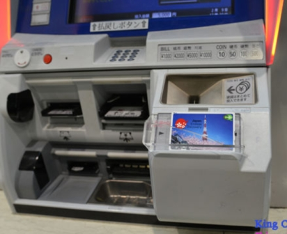
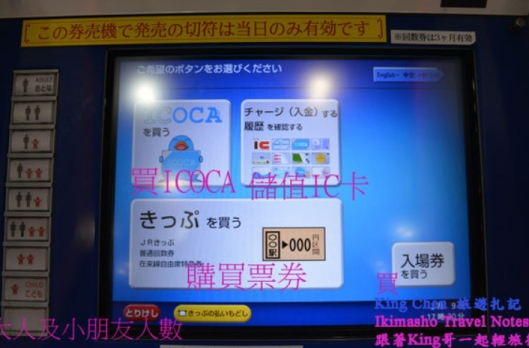

儲值
地鐵售票機
私鐵售票機
插入卡片
放入儲值的金額
JR新型-儲值機兼精算機
1. 插入ICOCA (紅色箭頭)
2. 選擇儲值金額(綠色箭頭)
3. 投入適當金額(黃色箭頭, 分別有零錢及紙鈔投入口)
JR舊型

JR第三種

將卡片放置在面板

點儲值IC卡

點現金

選擇金額

京阪電車-自動定期券發行機
1. 按下綠框儲值的按鍵
2. 紅色箭頭插入ICOCA
3.按下要儲值的金額
4. 投入適當金額 (如果要索取收據, 就按下"領收書あり")
另一種-簡易型儲值機!
將 ICOCA 放入, 再點選螢幕或機器上的儲值金額按鈕, 最後再插入紙鈔即可

便利商店
在櫃檯, 拿ICOCA給店員, 然後說你要儲值(charge，發音同"恰吉")
再拿出你要儲值的金額給店員即可
隨後店員會請你把卡片放在收銀機前或桌上的感應機上面
然後在儲值完畢後, 店員會再請您拿起ICOCA
補票
退卡
退卡地點: JR西日本ICOCA使用範圍內的各車站窗口, 皆可辦理退卡
退卡手續費: 220
說明：
退卡時, 若卡片還有餘額, 就會扣除220的手續費後, 再加上500的押金還你
若餘額低於220時, 則只會退還500
(換言之, 若你用到光, 去退卡, 他們也會還給你500)
★如何跟日本人說退卡?
日文說: 払いもどし (發音：HaRaI MoDoShi)就可以了
(或是手寫也可以)